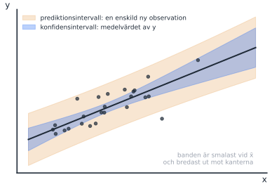
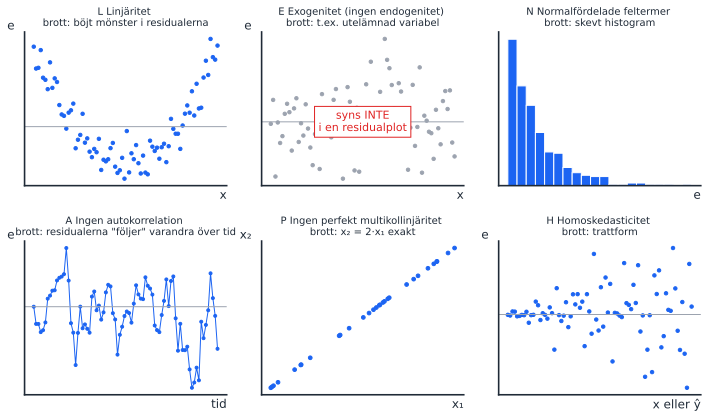
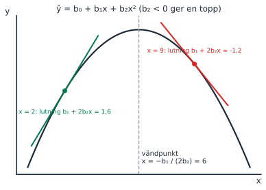

Tre områden som alla återkommer på nästan varje tenta: restriktionstestet med bostadsrätterna, antagandena och den kvadratiska modellens marginaleffekt. Antagandena var en av de tydligaste begreppsfällorna 2026-08-20, så lägg mest tid där. F9 (logaritmer) hålls på förmiddagen samma dag men tas i pass 5.
Föreläsning
Datum
Tema
Kapitel (5:e uppl.)
Teman enligt kursplanen
F6
tors 15 okt
Begränsade modeller
15.2–15.3
Ett generellt test av linjära restriktioner; intervalluppskattningar för responsvariabeln
F7
fre 16 okt
Antaganden i modeller
15.4
Modellantaganden och vanliga överträdelser
F8
mån 19 okt
Modeller med polynom
16.3
Den kvadratiska regressionsmodellen
Körschema
Tid
Vad
Kommentar
13:00–13:25
Inledning: det här behöver ni för uppgifterna
Se nästa avsnitt. Repetition (5 min), verktygslådan (5 min), sedan bilderna för LENA PH, restriktionen och parabeln (15 min). Formelbladet står först på uppgiftsbladet.
13:25–14:05
Del 1: uppgift 1–5
Uppgift 1 utan anteckningar först, sedan med. Hänvisa till formelbladet och tipsraderna innan du förklarar själv.
14:05–14:15
Paus
14:15–14:55
Del 2: genomgång
1 (antaganden, begreppsfälla) → 3 och 5 (kvadratisk, med tavelbilden) → 2 (restriktion) → 4.
14:55–15:00
Sammanfattning
LENA PH en gång till, och formeln b₁ + 2b₂x.
Blir det ändå tid över: ta en av frågorna under Fler tentafrågor på området, t.ex. den begränsade modellen eller KI mot PI.
Inledning: det här behöver ni för uppgifterna
Studenterna har ett formelblad först på uppgiftsbladet och en tipsrad under varje uppgift. Inledningen ska få dem att använda bladet, så att du slipper förklara samma sak för varje grupp.
Steg 1: repetition från pass 3 (5 min)
Fråga till gruppen, en i taget
“Vad testar F-testet i Excelutskriften, och vad vet vi om H₀ förkastas?” (Svar: H₀: alla β = 0. Förkastas den vet vi bara att minst ett β är skilt från 0. Det är hela uppgift 4.)
“Vad är SSE?” (Svar: summan av de kvadrerade residualerna, den oförklarade variationen. Restriktionstestet jämför SSE från två modeller.)
“Vad betyder lutningen b₁ i ŷ = b₀ + b₁x?” (Svar: hur mycket ŷ ändras när x ökar med en enhet. Följdfråga: “Är lutningen densamma överallt på en parabel?” Det leder till marginaleffekten.)
Steg 2: verktygslådan (5 min)
Skriv upp listan i ett hörn av tavlan och låt den stå kvar hela passet
Restriktion: skriv påståendet som en likhet mellan β:n. Likheten står i H₀.
Begränsad modell: sätt in H₀ i modellen. Jämför SSE med partiellt F: F = ((SSE_R − SSE_U) / q) / (SSE_U / (n − k − 1)).
KI mot PI: samma mittpunkt ŷ. PI är alltid bredare.
LENA PH: linjäritet (i parametrarna), exogenitet, normalfördelad felterm, ingen autokorrelation, ingen perfekt multikollinjäritet, homoskedasticitet.
“Gäller antagandet om linjäritet variablerna eller parametrarna?” Låt dem gissa, men säg inte svaret än. Det är begreppsfällan i uppgift 1 och ni tar den i genomgången.
Nya begrepp
F6: begränsade modeller och intervall
Nytt begrepp: restriktionstest (partiellt F-test)
Vi vill testa något annat än “är koefficienten noll”, t.ex. har två variabler samma lutning? Gör så här:
Skriv H₀ som en likhet: β₃ = β₄.
Bygg den begränsade modellen genom att sätta in H₀: y = β₀ + β₁x₁ + β₂x₂ + β₃(x₃ + x₄) + ε.
Skatta både den obegränsade och den begränsade modellen och jämför deras SSE:
\[F = \frac{(SSE_R - SSE_U)/q}{SSE_U/(n-k-1)}\]
q = antal restriktioner (här 1). Om F är stort ökar felet mycket när restriktionen tvingas på, och då förkastas H₀. Den begränsade modellen kan aldrig ha mindre SSE än den obegränsade.
Nytt begrepp: konfidensintervall mot prediktionsintervall
Konfidensintervall: för medelvärdet av y vid givna x, t.ex. genomsnittspriset för alla hus på 100 kvm.
Prediktionsintervall: för ett enskilt nytt y, t.ex. priset på ett visst hus. Alltid bredare, eftersom det också innehåller slumpen i ε.
Båda har samma mittpunkt: punktskattningen ŷ.
Rita på tavlan: två band runt samma linje

Rita linjen, ett smalt band (KI) och ett brett band (PI) runt samma linje. Fråga: “Vilket intervall skulle du använda om du ska sälja din lägenhet?” (PI.)
F7: antaganden (LENA PH)
Minnesregel: LENA PH
Antagande
Brott
Vad händer?
L
Linjäritet i parametrarna, rätt specificerad modell
Böjt mönster i residualerna
Fel modell; lös med x², ln x
E
Exogenitet: feltermen är inte korrelerad med något x
Utelämnad variabel, omvänd kausalitet
Skeva koefficienter (värst)
N
Normalfördelade feltermer
Skevt residualhistogram
t- och F-test osäkra i små stickprov
A
Ingen autokorrelation
Residualerna följer varandra över tid
För små standardfel
P
Ingen perfekt multikollinjäritet
x₂ = 2·x₁ exakt
Går inte att skatta
H
Homoskedasticitet: samma varians för alla x
Trattform
Standardfel och test opålitliga
Rita på tavlan: sex små residualplottar

Rita en ruta per bokstav och låt gruppen gissa bokstaven innan du skriver den. Poängen med E: brottet syns inte i en residualplot, det måste resoneras fram.
Fråga till gruppen
“Är det ett brott mot antagandena att vi har x² i modellen?” (Nej. Linjäriteten gäller parametrarna, inte variablerna. Det är exakt den distraktor som lurade studenter 2026-08-20.)
F8: modeller med polynom
Nytt begrepp: marginaleffekt i en kvadratisk modell
I ŷ = b₀ + b₁x + b₂x² finns x på två ställen, så effekten av en enhet mer x beror på var man är:
b₂ < 0 ger en topp (avtagande avkastning), b₂ > 0 en dal. x² kan inte “hållas konstant” medan x ändras.
Rita på tavlan: parabeln med tangenter

Rita en upp-och-nervänd parabel.
Rita en brant tangent till vänster (positiv marginaleffekt) och en negativ till höger.
Markera toppen och skriv x = −b₁ / (2b₂).
Räkna med siffrorna: b₁ = 2,4 och b₂ = −0,2 ger 2,4 + 2(−0,2)·2 = 1,6 vid x = 2 och 2,4 + 2(−0,2)·9 = −1,2 vid x = 9.
Tentafrågor (uppgiftsbladet)
1. Matcha regressionsantaganden
2026-08-20, fråga 1512 p🔥 Begreppsfälla: 42 %, gap 2,07🔁 På varje tenta
Inom regressionsanalysen använder vi ett antal antaganden. Para ihop nedanstående beskrivningar med de olika antagandena.
Antaganden: linjäritet, ingen multikollinjäritet, homoskedasticitet, ingen autokorrelation, ingen endogenitet, normalfördelning.
Beskrivningar att välja bland:
sambandet är linjärt i modellens parametrar och modellen är korrekt specificerad
de oberoende variablerna har inte ett perfekt linjärt samband
feltermens varians är densamma för alla värden på de oberoende variablerna
feltermerna från olika observationer är inte korrelerade med varandra
feltermen är inte korrelerad med någon av de oberoende variablerna
feltermerna är symmetriskt normalfördelade kring noll
alla variabler i modellen måste vara uttryckta i linjär form och får inte exempelvis kvadreras eller logaritmeras
den beroende variabeln måste vara normalfördelad för att konfidensintervall och hypotestest ska vara giltiga
korrelationen mellan de oberoende variablerna måste vara exakt noll
TipsFacit och genomgång
Gå igenom i LENA PH-ordning:
Linjäritet → sambandet är linjärt i modellens parametrar och modellen är korrekt specificerad
Exogenitet (ingen endogenitet) → feltermen är inte korrelerad med någon av de oberoende variablerna
Normalfördelning → feltermerna är symmetriskt normalfördelade kring noll
Ingen autokorrelation → feltermerna från olika observationer är inte korrelerade med varandra
Ingen (perfekt) multikollinjäritet → de oberoende variablerna har inte ett perfekt linjärt samband
Homoskedasticitet → feltermens varians är densamma för alla värden på de oberoende variablerna
De tre distraktorerna är precis de missförstånd som kostade poäng. Även den bästa A-tentan föll på två av dem:
“får inte kvadreras eller logaritmeras”: fel, det motsäger hela pass 4 och 5. A-tentan valde den för linjäritet.
“korrelationen … måste vara exakt noll”: fel, kravet är inte perfekt. A-tentan valde den för autokorrelation.
“den beroende variabeln måste vara normalfördelad”: fel, det är feltermen.
2. Hypoteser för lika lutningskoefficienter
2026-08-20, fråga 104 pLätt: 88 %🔁 På nästan varje tenta
Antag att du vill skatta sambandet mellan pris på bostadsrättslägenheter och ett antal oberoende variabler. Du skattar därför följande modell y = β₀ + β₁x₁ + β₂x₂ + β₃x₃ + β₄x₄ + ε där de oberoende variablerna är x₁ = bostadsyta, x₂ = antal rum, x₃ = bostadsrättsföreningens ålder och x₄ = byggnadens ålder. Om du vill undersöka om bostadsrättsföreningens ålder och byggnadens ålder har samma lutningskoefficienten, vilken av nedanstående visar då de hypoteser som ska testas?
H₀: β₃ + β₄ = 1, H_A: β₃ + β₄ ≠ 1
H₀: β₃ = β₄ = 0, H_A: β₃ ≠ β₄ ≠ 0
H₀: β₃ = β₄, H_A: β₃ ≠ β₄
H₀: β₃ + β₄ = 0, H_A: β₃ + β₄ ≠ 0
TipsFacit och genomgång
H₀: β₃ = β₄, H_A: β₃ ≠ β₄. “Samma lutning” översätts ordagrant, och likheten står i H₀.
Ta sedan steget till den begränsade modellen, eftersom det är så frågan oftast ställs: y = β₀ + β₁x₁ + β₂x₂ + β₃(x₃ + x₄) + ε (2024-03-19, fråga 10). På 2025-03-25 och 2025-08-20 gällde frågan i stället bostadsyta och antal rum. Då blir den begränsade modellen y = β₀ + β₁(x₁ + x₂) + β₃x₃ + β₄x₄ + ε.
3. Marginaleffekt i en kvadratisk modell (räkna)
2026-08-20, fråga 64 p74 %, gap 1,39
En forskare skattar en kvadratisk modell för logaritmen av årslön som funktion av utbildning: ln(lön) = β₀ + β₁·utbildning + β₂·utbildning² + ε. De skattade koefficienterna är b₁ = 0,09 och b₂ = −0,002. Vad är den marginella effekten av utbildning vid 12 års utbildning?
9,0 procent
2,1 procentenheter
4,2 procent
Det går inte att tolka som en procentuell förändring eftersom den beroende variabeln är logaritmerad
−0,2 procent
TipsFacit och genomgång
4,2 procent. 0,09 + 2 · (−0,002) · 12 = 0,09 − 0,048 = 0,042. Eftersom y är logaritmerad tolkas det som cirka 4,2 % högre lön per extra utbildningsår (förhandstitt på pass 5). Distraktorn 9,0 % är bara b₁, dvs att glömma kvadrattermen.
Om vi i ett “Test of joint significance”, dvs det F-test som genomförs för modellen som helhet, förkastar nollhypotesen så kan vi tolka detta som att ingen av de oberoende variablerna har ett linjärt samband med den beroende variabeln.
Om vi i ett “Test of joint significance”, dvs det F-test som genomförs för modellen som helhet, förkastar nollhypotesen så kan vi tolka detta som att summan av lutningskoefficienterna inte är lika med noll.
TipsFacit och genomgång
Båda falska. H₀: β₁ = … = βₖ = 0. Att förkasta betyder bara att minst en β är skild från noll. a) beskriver H₀ själv. b) är en helt annan restriktion (summan), som skulle kräva ett eget restriktionstest som i uppgift 2.
5. Marginaleffekt i en kvadratisk modell (begrepp)